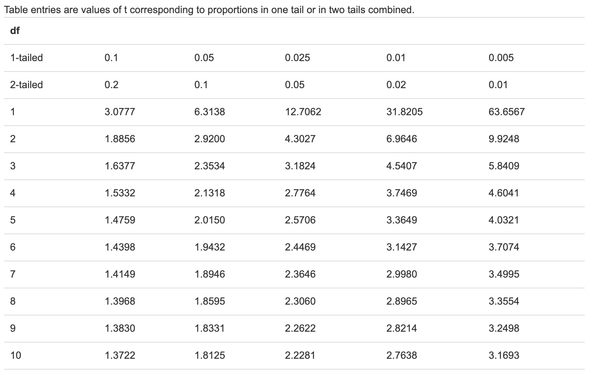

以下内容整理自可汗学院《统计学》
描述统计
描述统计是定量描述
集中趋势：众数、平均数、分位数
离散趋势：极值与极差、平均差、方差、标准差、分位差
分布：峰态、偏态
随机变量（random variable）
随机变量称为变量，但与我们传统意义上的变量不一样。比如：
1 | x+3=7 |
我们可以得到变量x=4。我们熟悉的变量是可变化，可求解的。变量可以取定值。但随机变量虽然也可以取很多值，但这些变量无法求解。这些随机变量通常用大写字母X Y Z表示。
它其实是一种函数，将随机过程映射到实际数字。假设我想量化一个随机过程，比如明天是否下雨：
X = 1 , IF RAIN TOMORROW
2 , IF NOT RAIN TOMORROW
这个X是有概率的，我并不知道它会取什么值。再举个例子，比如抛硬币，抛硬币是一个随机过程，每抛一次都是一次试验。随机变量用来量化这个过程。
下面我们来看概率分布和期望值。
随机变量有两类：离散(discrete)随机变量和连续(continuous)随机变量。
之前我们提到的都是离散随机变量，例如抛硬币(0,1)，投骰子(0,1,2,3,4,5,6)，是否下雨(1,2)。以抛硬币为例，如果是等概率的。则出现0的概率为0.5，1的概率也为0.5。因此随机变量会出现两个维度，取值和概率，其中概率和为1。
与离散随机变量具有有限个数值相比，连续随机变量有无限个结果，例如：X为明天的雨量（英寸数）。
均匀分布，还有二项分布、正态分布（高斯分布/钟形曲线）等。
概率密度函数
概率密度函数其实就是连续的随机变量。
a. 连续的随机变量，出现某个值的概率为0，因为直线没有面积
b. 曲线下方的面积是1，这条同样适用于离散随机变量
二项分布
有一枚硬币，往上抛5次。定义X等于这5次中正面向上的个数，
P(X=0)=(1/2)^5=1/32
P(X=1)=5/*(1/2)^5=5/32
P(X=2)=10/*(1/2)^5=5/16
P(X=3)=10/*(1/2)^5=5/16
P(X=4)=5/*(1/2)^5=5/32
P(X=5)=(1/2)^5=1/32
我们看到像个钟形，离散情况下得到的是二项分布，连续时候得到的是正态分布。
P(X=n)=5!/n!(5-2)!
为什么叫二项分布呢？因为和二项式展开的每一项一致，所有概率值可以通过二项式系数确定。
我们再看一个例子，假设某个人打篮球投6次篮(n=6)，每次投篮命中率是30%（不中的概率是70%）。下面定义随机变量X，设X是投进篮的次数：
P(X=0)=0.7^6
P(X=1)=C(1,6)*0.3*0.7^5
P(X=2)=C(2,6)*0.3^2*0.7^4
P(X=3)=C(3,6)*0.3^3*0.7^3
P(X=4)=C(4,6)*0.3^4*0.7^2
P(X=5)=C(5,6)*0.3^5*0.7^1
P(X=6)=C(6,6)*0.3^6
P(X=n)=C(n,N)*p^n*(1-p)^(N-n)
Excel使用方法：
阶乘函数：fact(n) = n!
期望值E(X)
假设总体为3,3,3,4,5，那么均值为(3+3+3+4+5)/5 = 3.6，换一种方式计算就是(3\*3+4\*1+5\*1)/5 = 3.6
如果我们把出现的次数替换为出现的概率，则是：(3\*60%+4\*20%+5\*20%)/5 = 3.6。为什么这么做呢？因为这同随机变量是有关系的。
之前我们算过总体的均值，哪怕总体个数有150w之多，但个数既是有限的，就可以计算总体的均值。现在考虑总体数据量无穷的情况，比如随机变量。总体可以看作随机变量的每个实例，或者每次随机试验的集合，而随机试验可以做无数次。每次随机试验的结果，一般可以记作小写的x1, x2, x3…，可以看作是无穷总体中的样本，样本通常是有限个的。
随机变量的期望值，其实就是总体的均值。只不过此时的总体是无穷尽的，所以无法用全部个体求和然后除以个数的方式来求均值，不过我们知道这些数字的频率，这就是计算随机变量期望值的方式。如何知道数字出现的频率呢？答案是参照概率分布，这里是离散概率分布。
以抛硬币为例，E(X)= 0*0.015625+1*0.09375+2*0.234375+3*0.3125+4*0.234375+5*0.09375+6*0.015625 =3。
通过这种方式，我们计算了无穷总体的均值，也就是随机变量的均值。可以说3正式我们所“期望”的值，但需要注意的是，期望值并不一定是最可能的值。
因此，我们想通过上述例子证明：期望值的计算其实等同于总体均值计算，我们之所以这么做是因为无穷总体无法获得总体的个数，因此用频率作为权重，相当于计算加权平均值。这和之前求均值的方式没有本质区别。
二项分布的期望值
假设有随机变量X，表示n次试验成功的次数，其中每次成功的概率是p
泊松过程
假设你是一个交通工程师，想知道任意时刻通过街上某一点的车辆数。想确定某一小时内100辆车或5辆车通过的概率。最好的方式是先定义一个相关的随机变量X，表示一个小时内通过的车辆数。然后求出该随机变量的概率分布。
在讲具体泊松分布之前，有两个假设要讲一下
a.街上任意时间车流量没有差异（显然不是真实情况，高峰时间肯定比一般时间车多）
b.一段时间的车流量对另一段时间没有影响（就算一段时间车流量少，也不会影响到下一段时间车流量），即具有独立性
对于任何分布，我们可以首先估计均值，我们可以坐在路边观察几个小时的车流量，然后平均起来，这也许就是总体均值很好的估计值了。
假设期望值最好的估计E(X)是λ。由于每个时段车流量相同，我们可以把一小时分成60个区间，然后用二项分布来近似。即一分钟内是否有车通过，有车通过的概率为p，重复60次试验。而我们已知二项分布的期望值，它等于np。
λ辆车/小时 = np = 60 *λ/60 (重复60次试验*每分钟一辆车出现的概率)
p(X=k) = C(k,60) *(λ/60)^k *(1-λ/60)^(n-k)
结果可能很合理，不过有个核心问题。也就是如果一分钟内布置一辆车通过怎么办？之前我们把有一辆车通过叫成功，但没有考虑到一分钟内同时5车通过这样的情况。解决办法是，分更多的区间，如果一分钟不行，就拆成1秒钟。这样区间就不是60个，而是3600个
p(X=k) = C(k,3600) *(λ/3600)^k *(1-λ/3600)^(n-k)
这是更好的近似，但也有可能一秒钟开过2辆车，你可能会说继续分割就可以了，让这个数字越来越大，一直下去就能得到泊松分布。
所以这里告诉你们，泊松分布其实来自二项分布。而二项分布就是某种抛硬币，这是一切的源头。当区间个数趋近于无穷大时，就是泊松分布。
下面我们复习下手头的数学工具，
当x趋于无穷大时，(1+a/x)的x次方极限是e的a次方，推导过程如下：
1/n = a/x => x= na
lim(1+a/x)^x = lim(1+1/n)^na = lim((1+1/n)^n)^a = (lim(1+1/n)^n)^a = e^a
另外一个就是：
x!/(x-k)! = x(x-1)(x-2)…(x-k+1)
这里正好是k项，这对泊松分布的推导很重要。
回到我们的推导上来，当n趋近于∞：
E(x)=λ=np => p=λ/n
p(X=k) = lim C(k,n) *(λ/n)^k*(1-λ/n)^(n-k)
= lim n!/(n-k)!k! *λ^k/n^k* (1-λ/n)^n* (1-λ/n)^-k
= lim【n(n-1)(n-2)…(n-k+1)/n^k】 *【λ^k/k! 】* 【(1-λ/n)^n】* 【(1-λ/n)^-k】
= lim【n^k+…/n^k)】* lim【λ^k/k! 】* lim【(1-λ/n)^n】* 【(1-λ/n)^-k】
= 1 *【λ^k/k! 】*【e^-λ】*【1】
= λ^k/k!*e^-λ
因此，是取极限得到的e。
大数定律
大数定律是数学史上的第一个“极限定理”，由雅各布.伯努利于1713年提出。
该定律的应用范围非常广泛，但有时候会被错误运用。
样本均值将收敛于总体均值，或随机变量的期望值。“大数定律”用于描述“平均结果”和“频率”的稳定性。
通俗来讲，是在“试验条件”不变的情况下，当我们“大量重复”某一相同实验时，其最终的“实验结果”可能会稳定在“某一数值”附近，“偶然”中包含着某种“必然”。
假设有随机变量X，大数定律是说，随机变量的n次观测样本，将所有观测值平均起来，定义变量Xn = (x1+x2+x3+…xn)/n。大数定律是说：样本均值趋近于随机变量的期望值，或者说n趋近∞时，样本均值趋于总体样本。趋近可能说的不够严谨，意思就是：样本量足够大的时候，样本均值接近期望值。
但为什么如此？通常会有一些误解。
大数定律是说，假设随机变量X等于抛100次硬币得到正面的次数。我们知道该随机变量的期望值，乘以一次试验成功的概率，也就是100*5 = 50。一次试验是指，100枚硬币抛出，或放在盒子里摇，第一次试验要盒子，得到55枚正面，第二次得到65枚正面，第三次得到45枚硬币…总共摇100次。根据大数定律，这些观测值的均值，将收敛于50。随着n趋于∞。
很多人觉得，如果100次试验后，如果正面数高于均值，则定律会让后面的正面数更少。这不对，这通常被称作「赌徒谬论」。并非如此，之后的概率是一样的，得到正面的概率永远是50%。并不会因为之前正面得到的多，后面就会得到的少来弥补。并不是说，长时间不成比例地得到正面，那么之后就更有可能不成比例地得到反面。大数定律不关心前面发生的情况，比如优先次试验后，可能得到的平均值在70，可能性很小。
举个例子，如果在买彩票选号的时候，有意地去选择以往中奖号码中出现少的数字，这样不就遵遁了“大数定律”规律，增加了中奖的机率吗？这恰好是“赌徒谬误”的心理陷阱，将原本“互相独立”的随机事件当成了“有关联”的事件。
比如说，第一次抛硬币，是一个随机事件。再抛一次，是另一个随机事件。这两次随机事件是相互独立而没有关联的，第二次的结果并不以第一次为条件。
这种错误应用“大数定律”时的心理偏差，被心理学家们戏称为“小数法则”：就是将通过研究“大样本”得到的结论，应用到“小样本”的实践中去。由于人类“惯性思维”的原因，大多数人会违背 “大数定律”而不由自主地运用“赌徒谬误”。
大数定律根本不关心这些有限次试验，后面还剩下无限次试验，这无限次试验的期望值是50。最后肯定收敛回期望值。收敛回期望值是因为后面还有无限次收敛于期望值的试验，让前面的有限次试验，还有无限次收敛于期望值的试验。只要后面试验的数字足够多，就能收敛回期望值。
不过买彩票和赌博的人没有遵循这个原则，样本足够大的话，我们能算出期望值。但赌徒们不遵循这个原则，短期内，少量样本事，有人能赢。但长期来看，肯定庄家会赢，因为参数是赌场设定的。
比如：纵轴表示样本均值
正态分布
正态分布是，根据数据点进行推论，很大程度都是基于正态分布。
离散概率密度，可以看到某个点的概率，但连续密度函数，只能看一段区间的概率，比如4.5到5.5之间，概率等于4.5到5.5的概率密度函数的积分
概率密度函数
我们再来理解一下指数部分，x-μ是我们要求的值同均值之间的距离，(x-μ)/σ表示离均值有多少个标准差远，它被称为标准z分数。然后平方，乘以-1/2。相当于e的(x-μ)/σ次方的二次方，再另一个-1/2指数。
同理，我们倒弄一下1/（σ*根号下2π），等于1/（根号下2π*σ^2\）
最终，我们得到正态分布的概率密度函数为：
1/（根号下2π*σ^2*e^xxx）
不管看到哪种形式，我们都应该知道它是正态分布曲线。
标准正态分布（standard normal distribution）是μ=0，σ=1的正态分布
正态分布曲线
数据可下载自：http://www.khanacademy.org/downloads/NormalIntro.xls
均值
方差是同均值距离的平方的均值，标准差是其平方根。所以标准差可以说是同均值的某种平均距离。标准差越小，越多的点将越靠近均值，图像也就变得越来越窄。
比如，标准差为2，则得到一个非常密集的钟形曲线；标准差为10，则得到一个非常扁的钟形曲线，两侧无尽延伸。这是关键，二项式分布是有限的， 而正态分布在整个实数轴上都有定义。所以在均值为-5，标准差为10的情况下，我们得到1000的概率是非常低的，但还是存在可能性的。
上图中有三条直线，中间一条表示均值，左右两条表示离均值一个标准差远。
之前我们提到，正态分布不能看某个点的概率。我们需要看的是两点间曲线下方的面积。如果我们想看0的概率是不可能的，因为正好为0的概率在曲线下方没有面积。
哪些是正态分布？
✅ 手指的跨度（小拇指到大拇指的宽度）：最小为0，不可能到达无穷。但近似于正态分布，由于男生和女生手的差异，可能存在双峰
❌ 海运员工的年薪：右偏分布(right-skewed)
z分数 (z-score)
z-score = (x-μ)/σ
也就是离均值有多少个标准差远
z分数与概率的关系
经验法则又被称为3-sigma法则或者68-95-99.7法则。
在完美的正态分布中，
1.低于均值一个标准差处(μ-σ)到高于均值一个标准差(μ+σ)区域的面积，大概是68%。换句话说，68%的概率落在均值左右一个标准差范围内。
2.低于均值两个标准差处(μ-2σ)到高于均值两个标准差(μ+2σ)区域的面积，大概是95%。
3.低于均值三个标准差处(μ-3σ)到高于均值三个标准差(μ+3σ)区域的面积，大概是99.7%。
例如：假设美国一岁大的女孩体重服从正态分布，均值为9.5kg，标准差为1.1kg。估算美国1岁大女孩满足下列条件的百分比：
a.低于8.4kg b.7.3kg~11.7kg之间 c.高于12.8kg
a. 8.4 = 9.5-1.1 = μ-σ，概率为16%
b. 8.4 = 9.5-1.1*2 = μ-2σ，11.7 = 9.5+1.1*2 = μ+2σ，概率为95%
c. 12.8 = 9.5+1.1*3 = μ+3σ，概率为0.15%
概率的计算
如果我们想算-1到1之间的概率，通过积分密度函数的方法很难算。因此，我们这里引入一个新的函数定义，叫做累积分布函数(CDF)，这是求面积非常有用的工具。
累积分布函数是x的函数，它是概率密度函数从-∞到x范围内的积分。
如果我们想算-1到1之间的概率，可以用CDF(1)- CDF(-1)。
看上图，如果我们想知道均值左右各一个标准差之间的概率，我们可以在excel中操作一下，比如均值-5，标准差10。输入-15到5之间的概率，我们发现是68.3%。有趣的是，对于正态分布，均值左右一个标准差内的概率总是68.3%。
Excel计算正态分布的方法
Normdist，参数是x/μ/σ，True(求累积)，否则为False
中心极限定理(central limit theory)
在一定条件下，大量独立随机变量的平均数是以正态分布为极限的。
换句话说，随着实验次数的增多，样本均值（Sampling Distribution）的概率分布越来越接近正态分布。
如果抛的足够多，每一次试验相互独立，其随机变量等于1(如果为正)，0(如果为反)，那么这些随机变量的和，在抛次数趋于无穷时，趋于正态分布。但每一次抛硬币的试验并非正态分布。
我们可以理解为很多相互作用合在一起，最后就得到了正态分布的结果。因此正态分布非常重要，在大自然中无处不在。
注：大数定律只是揭示了大量随机变量的平均结果，但没有涉及到随机变量的分布的问题。
样本均值的分布(sampling distribution of the sample mean)
均值
课程仅通过实验来证明，并未给出严格的数学证明。实验如下：设定每一次的样本量N，计算N个样本的均值，大量重复该实验，观察样本均值的分布。
样本概率分布（离散）：
设定每次抽样的样本量N=5，重复试验20000次后，得到样本均值概率分布（以下称为均值分布）如下：
实验如下：设定每一次的样本量N，计算N个样本的均值，大量重复该实验，发现均值分布趋于正态分布，样本量越大拟合得越好，且均值分布的均值为原样本分布的均值。
此外，每一次抽样的样本量N越大，正态分布越尖（顶部越平滑）。这很好理解，因为样本容量越大，离均值很远的概率就越低（标准差越小）。
其他指标：
偏度(skew)：如果是完美的正态分布，偏度为0；如果偏度为正(positive skew)，意味着右侧尾部较长；偏态为负，则左侧尾部较长。
峰度(kurtosis)：如果是完美的正态分布，偏度为0；如果峰度为正(positive kurtosis)，尾部会较肥，顶端更尖锐；峰度为负，则顶端更平滑。
下面进一步讲解随着样本量n的改变，分布会如何变化。加入样本容量为n，重复次数为N。
如果样本量n=4，重复多次后，得到的分布趋近于正态分布。
当重复次数n很小时，结果不会很好地趋近于正态分布。
N=1时，也就是抽取n=4个样本，但只做一次试验，得到样本均值，结果肯定不是正态分布。
n=2时，我们通过试验发现哪怕进行10000次也不会趋近于正态分布。
当n=10或15时就已经显现出正态分布的样子了，因为朝正态分布收敛的很快，。
样本->随机变量：
样本均值抽样分布的均值，这是真正的随机变量均值。对原来的分布以一定样本容量抽取样本值，然后平均，就能描述函数。
因此，如果把样本均值抽样分布的均值作为随机变量的话，当n越大，标准差越小。
标准差/方差
每一次抽样的样本量n越大，样本均值的分布越尖（顶部越平滑），标准差越小。
那么已知原分布的均值μ，标准差σ，样本容量n，是否有公式预测样本均值分布的方差？
课程未作证明，只是给了一些直观认识。
我们已经知道，样本容量n和样本均值的标准差呈反向关系，容量n越大，标准差越小。
样本均值的方差与总体方差存在n倍关系，因此标准差的关系为（课程未做证明，只是给出结论，通过实验验证了下）：
例题
男性在户外活动时平均喝水2升，标准差0.7升。组织一项50人的全天户外旅行，准备110升水，这些水不够的概率是多少？
解：110/50 = 2.2，问题转换为“50个人平均用水量大于2.2升的概率”，即总体均值μ=2.2，总体标准差σ，求样本均值的抽样分布（样本量n=50，重复多次抽样得到的分布）中x大于2.2的概率。
样本均值分布的均值：μ(X) = μ= 2
样本均值分布的标准差：σ(X) = 0.7/(根号下50) = 0.099
z-score= (2.2-2)/0.999 = 2.020（大于均值右侧2.020个标准差），根据z-table（注意z-table为低于该值的概率）得到0.9783，因此概率为0.0217
置信区间
置信区间：样本统计量所构造的总体参数的估计区间（先估计出一个总体分布），这个参数的真实值落在测量结果范围的概率（需给定区间，估计出现在区间的概率）
从农场收获的20w个苹果中抽取36个作为样本，样本中苹果重量的均值是112克，标准差为40克。问20w个苹果的重量均值处在100到124克之间的概率是多少？
假设总体的均值为u，标准差为σ。已知样本均值为112，样本标准差为40 。我们知道，抽样分布的均值等于总体均值，所以样本均值= 112，样本的标准差。比均值大一个标准差大概在这里，我们可以通过均值抽样分布确定这个标准差。在样本量较大，很好给出总体标准差，样本小时会有一些修正因子。这里，样本标准差 = 样本标准差/根号下n = 样本标准差/6，每个均值堆叠在一起就形成这个分布，用来得到这个分布的值是原分布中样本的均值。
问题是关于20w个苹果的平均重量，也就是u，也就是样本均值112左右12克范围内。这里也就是问，总体均值落在均值左右12g范围内的概率，也就是某一特定样本均值落在抽样分布均值左右12g范围内的概率。如果能求出12对应多少个标准差，就能用z
我们还不知道抽样分布的标准差，我们只知道它是σ/6，但σ也是未知的。所以我们只能用最好的估计值来代替总体标准差σ，即样本标准差((x1-x)^2+…+(xn-x)^2+/n-1)，也就是40。因此 σ/6 = s/6 = 40/6 = 6.67。于是样本均值抽样分布，标准差的最好估计是6.67。
那么12g对应多少个标准差呢，12/6.67 = 1.8。所以问题变成：某样本均值落在均值1.8个标准差范围内的概率。1.8个标准差要比1多出0.8。
这里还是用z表格求概率，首先可以求均值到其右侧12g处之间的概率，然后根据正态分布对称性。将这个概率乘以2就可以了。均值到其右侧12g处之间的概率是多少呢？
1.8对应的0.9641是从-∞到均值右侧1.8个标准差的x的面积，均值到右侧1.8个标准差的面积为 0.9641 - 0.5 = 0.4641。所求面积为0.4641*2 = 0.9282
伯努利分布的均值和方差
成功的概率为p，失败的概率为1-p。
均值/分布的期望值 ： (1-p)*0+p*1 = p （这可能是分布取不到的值）
方差：p*(1-p)^2 + (1-p)(0-p)^2 = p\(1-p) = pq
误差范围
假设两位候选人，投给B候选人的概率为p，A候选人的概率为1-p。我们定义投标给A记为0，投票给B记为1。
注：这是个伯努利分布。
这个分布的均值为p，
但是国家人太多了，不可能每一个人都去问，于是均值μ、概率p就无法准确获得。不过我可以进行一项随机调查，从总体中进行抽样，用抽样样本去估计总体，然后还可以评判估计得有多好。
假设随机抽取了100人，57个人选A，即样本值为0；剩下43个人选B，即样本值是1。那么样本均值和方差分别为：
均值：(57*0+43*1)/100 = 0.43
方差：57*(0-0.43)^2 + 43*(1-0.43)^2 / (100-1) = 0.2475
标准差： 0.495
有个更深层的问题，这个样本有多好呢？我们有95%的把握确信真实均值在该区间内。
我们看下样本均值的抽样分布（以下称为均值分布）。
均值分布的均值，我们从前面已知，均值分布的均值等于原总体分布的均值μ，抽样也就是从原总体中抽取。
均值分布的标准差，等于总体分布标准差的σ/根号下n = σ/10。但我们不知道这个σ，只能用样本标准差来估计σ。因此，我们从样本是得不到完全正确的σ的，只能通过样本去估计。样本标准差是对σ最好的估计，然后除以10，得到抽样分布标准差的最好估计。
（注意：这只是个估计，后面的数都不太准。）
计算后约等于 0.495/10 ≈ 0.05，因此关于此标准差的最好估计是0.05。
进一步地，我们想得到一个置信区间，保证总体的均值能有95%的概率为这个样本均值，在伯努利试验中均值恰好为p=0.43（这里是由于伯努利的特殊性质，均值恰好等于p）。这里我们利用正态分布（这里是由于大样本，根据中心极限定理，样本均值符合正态分布）x在[μ-2σ, μ+2σ] 概率为 95.4%的结论，得到如下推导：
P(样本均值在总体均值2σ范围内) = 95.4%
=> P(总体均值在样本均值2σ范围内) = 95.4% （由于总体分布的均值等于样本分布的均值）
=> P(p在样本均值2σ范围内) = 95.4%（2σ未知，我们需要用估计值，即上面算出的0.05。这里总体均值可以用p代替，是在伯努利分布的前提下）
=> P(p在样本均值左右2*0.05范围内) ≈ 95.4% （从这一步开始，由于用的估计值，因此用约等于）
=> P(p在样本均值左右0.1范围内) ≈ 95.4%
=> P(p在[0.33,0.53]范围内) ≈ 95.4%
注：从推导过程我们发现，一开始标准差很准确，最后变成了估计值。因此如果样本偏得厉害，估计值则不准，因此只能说大约95%。
这里得到了一个置信区间，[0.33,0.53]的95%置信区间。也就是说置信水平有95%，p落在0.33到0.53之间，也可以说误差范围是0.1(10%)，表示存在一个值，均值落在得到这个值加减10%的范围里。
这是已知信息条件下最好的衡量了，若需要更准确，则要提高样本量。这样抽样分布的标准差会变小，误差范围也会变小。
置信区间与置信水平、样本量等因素均有关系。
在置信水平固定的情况下，样本量越多，置信区间越窄。
在样本量相同的情况下，置信水平越高，置信区间越宽。
注：这里可结合猴子——《统计概率思维》系列课程中的置信区间部分理解
置信区间相关例题
例题1：大样本情况
某地方教学区获得一笔技术拨款用于在教室中安装一组的计算机，该区共有6250名教师，随机抽取250人。问他们是否认为计算机室教师必备教学工具，250人中，142名教师认为计算机室必备的教学工具。
问题1：计算教师认为计算机是必备教学工具的99%置信区间
答：设教师认为必备为1概率为p，认为不必备为0概率为1-p，即总体服从伯努利分布。
下面我们来转化下问题：计算教师认为计算机是必备教学工具，相当于计算p，相当于计算总体均值。由此问题变为用样本均值（样本量为250）预估总体均值p的可信度（置信水平）99%时候的置信区间。
样本均值是：(1*142+0*108)/250 =0. 568
样本方差是：142*(1-0.568)^2+108*(0-0.568)^2 / 250-1 = 0.246
样本标准差是：0.495≈ 0.05
样本均值的标准差是：0.05/根号下250 = 0.031
由于我们想要的是99%置信区间，那么样本均值距离多少个标准差能达到99%呢？我们希望有99%的纪律，抽取一个样本均值抽样分布的样本值它会落在均值周围这么多标准差范围内。
99%的一半应该是0.495，因此z值（由于大样本，均值符合正态分布，可用z值）对应的概率应该是0.495+0.5 = 0.995，查阅z-table，我们得到z-score应该是2.58，对应的概率是0.9902。也就是说均值左右2.58个标准差范围里[μ-2.58σ, μ+2.58σ]概率达到0.9902。
即置信区间为：[0.568+2.58*0.031, 0. 568-2.58*0.031] = [0.488,0.648]
问题2：保持99%置信水平的前提下，如何缩小置信区间
答：抽取更大样本即可。抽样分布的标准差就会减小（因为分母变大）。而置信区间是加减一定倍数的标准差，范围也会变小。
例题2：小样本情况
7个患者在服用新药3个月后测量血压，其血压上升值分别为下面七个值：
1.5,2.9,0.9,3.9,3.2,2.1,1.9
问题1:为总体中所有病人的血压升高真正期望值建立一个95%置信区间
答：
样本均值为：2.34
样本标准差为：1.04
样本均值标准差为：0.39
对于正态分布，我们会去查z分布。但是这里不是正态分布，而是t分布。也就是均值左右包含95%面基的区域，t分布对应有t表格，在这里，我们选择“双侧”检验，“单侧”表示一直累积到特定值的累积百分比，这里是对称的，选择2-tailed。总之n=7时，有6个自由度，也就是n-1个。

我们得到95%对应的t值是2.447，也就是2.447个标准差估计值。
95%置信区间为：[2.34-2.447*0.39,2.34+2.447*0.39] = [1.38, 3.3]
在这个案例中我们遇到一个问题，n只有7。此时这个估计值就不算好了，因为n太小了。通常，n<30被认为是糟糕的估计。这样的抽样分布不能像之前一样使用中心极限定理之类的，我们需要改变抽样分布。因为不能再假设正态分布了，而是使用t分布，t分布是专门为小样本容量时置信区间的更好估计所设计的，它和正态分布很像，这是此抽样分布的均值，但是它的尾部较肥。为什么会有肥尾呢？
一般而言，抽样分布的实际标准差等于原分布标准差/根号n。当n=7，我们一般不知道总体的标准差σ。此时最好的办法就是用样本标准差S来进行估计，这就是不说95%置信区间的原因，因为我们进行了估计。S会随着样本的不同而变化，而且这里的估计还很糟糕，因为样本容量很小(<30)。如果用样本标准差的公式估计抽样分布标准差，就不能将其看作正态分布，而应该假设它有更肥的尾部。
肥尾是因为低估了抽样分布的标准差。
假设检验相关例题
假设检验的基本原理是：出现了假设H0的小概率事件，因此拒绝H0，接受H1
神经学家测试一种药物对反应时间的效果，分别对100只老鼠注射一单位计量的药物对其进行神经刺激，然后记录反应时间。已知没有注射药物的老鼠平均反应时间是1.2秒，100只注射了药物的老鼠平均反应时间是1.05秒，样本标准差0.5秒。你认为该药物对反应时间有效果吗？
答：H0: μ=1.2 H1: μ≠1.2
总体均值：1.2
总体标准差（估计）：σ = s/根号下100 = 0.5/10= 0.05
那么1.05秒距离均值多少标准差呢？其实就是z-socre = (1.05-1.2)/0.05 = -3，即小3个标准差的距离。根据经验法则，3个标准差内的概率是99.7%，负尾部和正尾部的概率各为0.15%，总概率为0.3%（p值）。
假设药物没效果，这种极端情况出现的概率只有0.3%< 5%。因此结果更倾向于支持备择假设，拒绝零假设（尽管不是100%确信）。
单侧检验和双侧检验
在上面的例子中，我们使用的是双侧检验，因此得到的结论是平均反应时间不是1.2秒，但究竟是提高了还是降低了呢？我们不得而知。
下面我们考虑用单侧检验做一遍：
答：H0: μ=1.2 H1: μ<1.2
总体均值：1.2
总体标准差（估计）：σ = s/根号下100 = 0.5/10= 0.05
如果零假设成立，得到结果低于1.05秒的概率为0.15%。
在单侧检验里，p值 = 0.15%。
总结一下（以下内容为个人的理解）：
假设检验的逻辑是，如果出现了H0的小概率事件，则判定H0不成立。
那么这个小概率事件一定是不符合H0的，换句话说，就是符合H1的。但无论如何，我们定义的小概率事件的概率都是α。因此，
a.如果原假设是=μ，备择假设是≠μ
那么如果发生了小概率事件，样本统计量可能出现在极大/极小处，因此使用双侧检验。
最终我们拒绝的条件是 p(X<=样本统计量) < α/2 或 p(X<=样本统计量) > 1-α/2
p值 = p(X<=样本统计量)？？？
b.如果原假设是≤μ，备择假设是≥μ
那么如果发生了小概率事件，样本统计量一定出现≥μ处（因为拒绝原假设，即出现了与原假设相悖的情况），因此使用右尾检验。
最终我们拒绝的条件是 p(X<=样本统计量) > α
**p值 = p(X<=样本统计量)
c.如果原假设是≥μ，备择假设是≤μ
那么如果发生了小概率事件，样本统计量一定出现≤μ处（因为拒绝原假设，即出现了与原假设相悖的情况），因此使用左尾检验。
最终我们拒绝的条件是 p(X<=样本统计量) < α
可参考知乎：https://www.zhihu.com/question/354041406/answer/889364486


z统计量 vs t统计量
z统计量：我们
如果用样本对总体进行估计：
中心极限定理告诉我们，样本容量充分时，样本标准差等于总体标准差除以样本量的平方根。然后查z-table。
总体标准差通常是未知的，用样本标准差作为估计值。在样本容量n>30时可行，或者可以认为n>30符合正态分布。如果<30，特别是比30小很多时，就不服从正态分布了。
当n>30 ，这个统计量符合正态分布；否则，则服从t分布
| z统计量 | t统计量 |
|---|---|
第一类错误和第二类错误（Type I/II error）
以下案例参考知乎：https://www.zhihu.com/question/20993864
假设检验的两类错误：
| 实际情况 | 拒绝H0 | 接受H0 |
|---|---|---|
| H0为真 | 第一类错误(α) | 结论正确(1-α) |
| H0为假 | 结论正确(1-β) | 第二类错误(β) |
第一类错误其实为“弃真”，第二类错误为“存伪”。
例如：零假设：H0，备择假设：H1
第一类错误：拒绝正确的零假设，概率恰好为显著性水平α。就是拒绝样本来自μ=μ0的总体，因为检验时出现了小概率事件（概率只有α=5%，但也是真实出现的），但是被拒绝了，即“弃真”。表示有多大的把握不冤枉好人。
避免方法：可通过α水平控制，降低α水平
第二类错误：接受错误的零假设。即接受样本来自H0假设，但实际样本来自H1假设。这种情况出现是由于，实际的总体来自H1的分布，但抽样恰好出现在H0的大概率分布里
避免方法：扩大样本容量

上图是*假设总体服从正态分布的情况（通常检验u1是样本均值，根据中心极限定理，符合正态分布）
根据上图，几个知识点：
1.第一类错误和第二类错误不会同时发生
2.出现第一类错误的概率为α（显著性水平），第二类错误的概率为β，当α越小，β越大（竖线越往右，α的值就越小，β越大）
3.要同时减小α和β，只有增加样本数。（样本量越大，均值服从的正太分布方差就越小，正太分布的图画出来就又高又瘦，两个正态分布的图改成瘦高形的，就能看出来α和β都变小了）统计上将1－β称为检验效能或把握度（power of a test），即两个总体确有差别存在，而以α为检验水准，假设检验能发现它们有差别的能力。实际工作中应权衡两类错误中哪一个重要以选择检验水准的大小。
统计功效(power)是说拒绝零假设（H0）后接受正确的H1假设概率。直观上说，AB即使有差异，也不一定能被你观测出来，必须保证一定的条件（比如样本要充足）才能使你能观测出统计量之间的差异；否则，结果也是不置信的，具体的，可以参考下面这张图：
为什么原假设一般是想要拒绝的假设?
因为我们无法完全验证某个假设一定成立的（毕竟只能抽样，不能得到总体真实情况），只能通过小概率事件来拒绝某个假设，拒绝是有理有据（出现小概率事件），且可以控制风险水平的（置信水平α）
在假设检验中的应用
总结一下，对于ABTEST实验：
· 第一类错误α不超过5%。也就是说 Statistical Significance =1-α=95%
· 第二类错误β不超过20%。也就是说 Statistical Power = 1 -β = 80%。
对α与β的理解：
对两类错误上限的选取（α是5%，β是20%），我们可以了解到A/B实验的重要理念：宁肯砍掉4个好的产品，也不应该让1个不好的产品上线。
在假设检验中同时减少两类错误的最好方法是适当增加样本含量 [2] 。
线性回归中的平方误差
在二维坐标轴中有n个点，最小化这些点到该直线的平方误差。这是怎样一条线呢？
假设这条直线是 y=mx+b，需要求出m和b值，使得下面的SE最小。注：误差是指点的yn与直线y的距离。
1 | SE = (y1-(mx1+b))^2 + (y2-(mx2+b))^2 + ... + (yn-(mxn+b))^2 |
下面是推导过程：，方便之后使用微积分求出最小化平方误差的m和b值
1 | SE |
这个表达式在三维(m/b/SE轴)图像中其实是一个曲面，像碗一样的形状，我们希望求一个(m,b)使纵坐标最低。下面我们将分别对m和b求偏导，因为在纵坐标最低的地方，斜率都等于0。
1 | # 分别对m和b求偏导 |
我们重新梳理下问题，即求解使点到直线平方误差最小的直线y=mx+b参数m和b，且必须满足①和②。我们从②中不难发现，(x拔,y拔)这个点落在我们要求的直线上。
下面我们再改写下式①，将两侧同时除以x的均值：
1 | m(x^2拔)/(x拔)+b = (xy拔)/(x拔) —— ① |
我们发现(x^2拔/x拔,xy拔/x拔)这个点也落在我们要求的直线上。
求解 ①和②，得到结果：
1 | m = (y拔 - xy拔/x拔) / (x拔 - x^2拔/x拔) |
注意到，这和用两点(x拔,y拔)和(x^2拔/x拔,xy拔/x拔)求斜率会得到一样的值
之前我们讲过平方误差，即SE：
1 | SE（LINE） = （y1-(mx1+b))^2+（y2-(mx2+b))^2+...+（yn-(mxn+b))^2 |
y的波动程度有多少百分比能被x的波动程度所描述？
y显然是有波动的，那么由x波动描述的到底有多少呢？首先想想，y的总波动是多少呢。考虑方差时也是如此，方差就是y波动的均值。这里考虑到某几种趋势的距离的平方，最好的集中趋势就是算术平均值了：
1 | y的总波动（总平方距离）SE(Y拔)：(y1-y拔)^2+(y2-y拔)^2+...+(yn-y拔)^2 |
那么y的总波动有多少百分比能被x的波动程度所描述？首先考虑下，总波动中有多少没有被回归线所描述？答案就是平方误差。
总波动中有多少百分比没有被x的波动所描述？或者说没有被回归线所描述？
SE（LINE）/ SE(Y拔)
取剩余集合，即总波动有多少百分比能被直线所描述？这个数字称为R-Square
R-Square = 1 - SE（LINE）/ SE(Y拔)
如果直线的平方误差很小，这意味着什么？也就是这个总误差非常小，直线拟合得非常好。
此时因为SE（LINE）接近于0，R-Square接近1，也就是说y的波动很多都被x的波动描述了（个人理解：不同的x对应不同的y值，这个x对应的y与真实值很相近，即y的波动是由于x变动导致的，而且描述得很好）
相反，如果直线的平凡误差很大，那数据点和直线距离很大，那么整个R-Square就会接近于0。这说明y的波动只有一小部分是由x的波动引起，或者说直线描述。
例1：
假设有(1,2),(2,1),(4,3)三个点，拟合直线是？
X拔 = (1+2+4)/3 = 7/3
y拔 = (2+1+3)/3 = 2
xy拔 = (1*2+2*1+4*3)/3 = 16/3
x^2拔 = (1^2+2^2+4^2)/3 = 7
m = (7/3*2 - 16/3)/[(7/3)^2-7] = 3/7
b = 2 - 3/7*7/3 = 1
例2：
求下列点的拟合直线：
设最佳拟合直线为y=mx+b，其中最小化这些点总平方误差的直线斜率为m。
1 | m=（x拔y拔-xy拔)/((x拔)^2-x^2拔)=(1/2*1/4-21/4)/((1/2)^2-(11/2)^2)=41/42 |
因此直线方程为：y=41/42x-5/21
在这个直线方程中，有多少y的波动能被x的波动解释（以下可通过Excel计算）：
| x | y | y* | Sqrd err w/line | sqrd from mean y |
|---|---|---|---|---|
| -2 | -3 | -2.1905 | 0.655328798 | 10.5625 |
| -1 | -1 | -1.2143 | 0.045918367 | 1.5625 |
| 1 | 2 | 0.7381 | 1.592403628 | 3.0625 |
| 4 | 3 | 3.6667 | 0.44444444 | 7.5625 |
| 2.738095238 | 22.75 |
1 | R-Square=1-SE(LINE)/SE(Y拔)=1-2.738095238/22.75=0.88 |
R-Square=0.88是一个很高的值，我们从图中也可以看到，点与直线的距离都不远。比起均值线，每个点显然和回归线接近得更好。
协方差和回归线
两个随机变量之间协方差的概念：两随机变量离各自均值（期望值）距离之积的期望值
cov(X,Y) = E[(X-E(X)) * (Y-E(Y))]
我们来直观理解下。
依据上述公式，假如X=1,E(X)=0;Y=3,E(Y)=4，那么协方差中的(X-E(X))(Y-E(Y))部分值为-1，为负值。只有当X与Y同时高于/低于期望值时，才为正，即同步程度确定协方差的大小。
这一节更重要的，是将协方差的定义，同最小二乘回归联系起来。
这一节，我将重写这个协方差的定义。
cov(X,Y) = E[(X-E(X)) * (Y-E(Y))]
= E[XY - XE(Y) - YE(X) + E(X)E(Y)]
= E(XY) - E[XE(Y)] - E[YE(X)] + E(X)E(Y)
= E(XY) - E(X)E(Y) - E(X)E(Y) + E(X)E(Y)
= E(XY) - E(X)E(Y)
根据上面的式子，如果我们知道总体的期望，那么就可以算出来。如果只知道样本，怎么估计呢？
如果要估计，假设这是一系列数据点，E(XY) 可以用XY的样本均值来近似，E(X)、E(Y) 分别用X和Y的样本均值来代替。
cov(X,Y) = E(XY) - E(X)E(Y)
≈ XY拔 - X拔Y拔
从上一节的知识中我们不难发现，XY拔 - X拔Y拔是回归线斜率m的分子部分。
m = (xy拔-x拔y拔)/(x^2拔-(x拔)^2)
b = y拔-m*x拔
那么m的分母(x拔)^2-x^2拔怎么理解呢？
x^2拔-(x拔)^2= xx拔 - x拔x拔 = cov(X,X) =E [(X-E(X))*(X-E(X))] = E[(X-E(X))^2]
这恰好是方差的定义，因此我们得到下面的公式：
m = cov(X,Y) / var(X)
卡方分布（Chi-Square Distribution）
理论分布同观测结果吻合得有多好。
假设有一些相互独立的标准正态分布随机变量，记做X~N(0,1)，均值为0，方差为1。
卡方分布是什么呢？我们定义一个新变量Q1，从这个标准正态分布中抽样，然后对得到的值进行平方，它等于随机变量X的平方，
Q1 = X^2 ~
(1)
下面我们将会学到，卡方分布是这样一些数量的随机变量平方之和。上例只有一个随机变量然后平方，这只是其中一个案例，自由度为1。
下面我们再来定义Q2。
这里是一个独立的标准正态分布随机变量X1平方，然后是另一个独立的标准正态分布随机变量X2，然后平方
Q2 = X1^2 + X2^2 ~

从上图中我们可以看到，n表示自由度。
Q1，当n=1时的概率密度函数，接近0时它飞速上升，此时它只从标准正态分布中抽样一次，得到接近0的可能性非常大，被平方的数如果接近0，平方后会更接近0，所以得到的小数值概率非常高，低于某界限值的概率非常高，比如小于1/2，得到大数值的概率则非常低。
Q2，我们注意到接近0的可能性减少了，较远处的值更容易取到，不过仍然更容易取得小数字。
再看下一个卡方分布的随机变量Q3，它表示三个相互独立的随机变量平方之和，X1,X2,X3都服从标准正态分布。Q3是拥有3个自由度的卡方分布，对应图上 绿色曲线，因为这里取一些小数字之和，随着自由度增加，曲线会往右偏移。凸起部分越往右，从某种程度上来说，越来越对称。
有趣的是，这和我们之前看到的曲线都不一样，它没有小于0的值。这种性质的曲线我们倒是见过，因为这里是平方和，每个随机变量的值可能小于0，正态分布可以取负值。但由于这里是取平方和，结果显然是正的。
这个分布的作用，我们下一节会讲到，大体上是衡量离期望值的误差，这个可以看成总误差。你能求出这种误差的概率。如果你假设一些参数的话。
如果问题问：Q2>2.41的概率是多少？
选2.41是有原因的，这就需要查阅卡方分布表。看自由度为2的行，这里恰好有2.41，对应的p值为0.3，说明>2.41的概率为0.3。
皮尔逊卡方检验
我询问目前的店主，店内每天顾客数的分布是怎样？他告诉我如下情况
Day M T W T F S Expected% 10 10 15 20 30 15 Observed 30 14 34 45 57 20 10%的顾客来自周一，周二20%，周三15%等，周日停业休息。整周百分比为100%。我有点怀疑，想检验他给出的分布和我观测的数据是否吻合。要看是否吻合，我需要进行假设检验，显著性水平是5%。
H0:店主给出的分布是正确的 H1:店主给出的分布是错误的
我们首先要计算总体顾客数：30+14+34+45+57+20 = 200
根据总客户数和期望比例，我们得到期望的顾客数分别为：20，20，30，40，60，30
Mon Tues Wed Thur Fri Sat Expected% 10 10 15 20 30 15 Observed 30 14 34 45 57 20 Expected 20 20 30 40 60 30 将每天的观测值和预计值相减，差的平方，然后用预计值标准化。
X^2= (30-20)^2/20+(14-20)^2/20+(34-30)^2/30+(45-40)^2/40+(57-60)^2/60+(20-30)^2/30 = 11.44
那么得到至少这么极端情况的概率是多少呢？、
自由度：这里共求了6次和，其实有5条信息就能求出第6条信息，因此自由度是5。通过查表，我们得到
p-value = 11.07
而我们得到的结果11.44比11.07海盗，比临界值更极端。因此店主分布正确的可能性很低，我们拒绝他给我们的分布。
方差分析
假如有以下三次抽样，每次抽样的值分别为：
组1：3,2,1（均值:2）
组2：5,3,4（均值:4）
组3：5,6,7（均值:6）
在这里我们再定义下m和n。设有m组数据，每一组有n个成员，总数据数为m*n个。在这个例子中，m=3，n=3。
总平方和
这里我们提到一个新的概念——总平方和SST，你可以将其考虑为计算方差时的分子部分，也就是这些数据点离均值的距离的平方之和。
总均值为x拔：(3+2+1+5+3+4+5+6+7)/9 = 4 （相当于等于均值的均值）
总波动SST= (3-4)^2+(2-4)^2+(1-4)^2+(5-4)^2+(3-4)^2+(4-4)^2+(5-4)^2+(6-4)^2+(7-4)^2 = 30
自由度为2。这是由于我们有m(3)组数据，每一组有n(3)个成员，总数据数为m*n(9)个，自由度为mn-1(8)。如果你知道总均值，那么就只有8条新信息，最后一条信息可以通过均值求出来。
我们想知道这个总的波动程度SST有多少来自组内(SSW, Sum of Squares Within)的波动程度，有多少来自组间(SSW, Sum of Squares Between)的波动程度。
组内平方和
组内平方和，是各点同各自组均值的距离平方和。
组内平方和SSW = (3-2)^2+(2-2)^2+(1-2)^2 +(5-4)^2+(3-4)^2+(4-4)^2+(5-6)^2+(6-6)^2+(6-7)^2 = 6
总波动是30，其中有6是来自于组内。
计算中有多少自由度？假设每一组有n个数据点，这里n=3，如果你知道n-1个值，而且知道样本均值，那么就可以求得最后一个值。因此每个组n个数据，自由度是n-1。在这个案例中，n=3，每组自由度为2。一共是m*(n-1)个自由度，即3*2=6。
组间平方和
下面考虑下有多少总波动来自于组间波动。组间平方和，是指对于每一组，有多少波动是来自组均值相对总均值的波动。
组间平方和SSB = 3(2-4)^2+3\(4-4)^2+3*(6-4)^2 = 24
因此由于组间差异导致的波动是24。
这里有多少自由度？我们可以这样想，已知总均值时，有多少是新信息。如果知道2个组均值，知道总均值，第3个组均值总能求出来，因此自由度就是m-1，在这个例子中自由度为2。
现在我们把上边内容汇总在一起看：
| 指标 | 值 | 自由度 |
|---|---|---|
| SST(总平方和) | 30 | 8, mn-1 |
| SSW(组内平方和) | 6 | 6, m(n-1) |
| SSB(组间平方和) | 24 | 2, m-1 |
总平方和 = 组内平方和 + 组间平方和
也就是说，数据中的总波动，可以由每个组内的波动，加上组间的波动来描述。自由度也是如此；
总平方和自由度 = 组内平方和自由度+组间平方和自由度
那么通过上面的数据，我们想知道，三组的总体均值是否相同？我们来进行一个假设检验，显著性水平时10%：
H0: μ1 = μ2 = μ3 H1: μ1,μ2,μ3不全相等
下面我们计算出现样本情况的概率是多少，如果概率很小，则拒绝原假设。我们要使用的统计量叫F统计量，它服从F分布。你可以认为F分布是两个卡方分布之比。
F统计量是，组间平方和除以自由度， 除以组内平方和除以自由度
F-statistics = (SSB/m-1) / (SSW/m(n-1))
如果分子比分母大很多，说明波动大多数来自于组间，较少来自于组内，我们认为总体均值之间存在差异，即零假设成立。反之，如果分子很小，分母很大，那就意味着组内波动比组件波动在总波动中占比更多，差异可能只是随机产生的。这就更难拒绝零假设。
F-statistics = (24/2) / (6/6) = 12
经过查表，我们得到自由度为(2,6)的F统计量的10%临界值3.46，而我们得到的数值比这大很多。它的p值会很小，因此零假设前提下，得到如此极端的值的概率非常低，拒绝零假设。我们相信很有可能存在总体差异。
附：
下图是F分布的曲线，会随着分子和分母中自由度的不同而不同。这里有两个自由度要考虑，即分子自由度和分母自由度
注意，F统计量的分子和分母分别服从卡方分布，自由度分别为m-1和m(n-1)。
相关性和因果性
有这样一篇研究文章显示，吃早餐能预防减肥？它是否真的告诉我们，不吃早餐就会超重，肥胖？还是说，这些是有关联的。我们用数学的方式说，就是他们想指出的是“因果性(causality)”吗？但其实研究的是“相关性(correlation)”，二者差异很大。
因果性是说“A导致B”，而相关性是说“A和B有可能被同时观测到”，B发生时，A有可能同时发生。
可能是因为吃早餐更可能运动，运动能帮助消耗卡路里，于是不会肥胖。也许可能是这样的，运动是两者的原因，不能说早餐能让人不会肥胖。也可能和睡得晚，睡眠不足也有关系，显然睡得晚起得晚来不及吃早饭。因此研究中，区分因果性和相关性是非常重要的，如果是相关性，就不能下结论说“吃早餐能让人减肥“，相关性只能说明两者一起出现，更好的研究是能够证明因果性的研究。
演绎推理
估计该镇以后的人口数，镇工作人员收集了过去人口数据。显示在下列表格中：
| Year | Population |
|---|---|
| 1950 | 7403 |
| 1960 | 7958 |
| 1970 | 8377 |
| 1980 | 8775 |
| 1990 | 9323 |
| 2000 | 9794 |
| 2010 | 10281 |
镇里希望预测2015，2018，2020年的人口数，这需要用到归纳推理还是演绎推理？
首先考虑下，什么是归纳推理和演绎推理？
归纳推理是寻找规律或趋势，然后推广；演绎推理，则是从一些数据或事实出发，演绎得到其他正确的事实。归纳推理在推广时，并不确定趋势是否会继续，只是假设它会继续；而演绎推理则知道肯定正确。
这个镇是在估计2015，2018，2020人口数，也就是未来的情况无法确切知道。顶多只能通过趋势看过去每10年增长百分之多少，然后趋势推广至2015，2018，2020年，因此这是归纳推理。
使用演绎推理和分配率论证：
(x+y)^2 = x^2 + 2xy + y^2
并为每一步给出理由
我们需要推演出某式等于某式，这就是演绎推理。
(x+y)^2
= (x+y)(x+y)
= (x+y)x +(x+y)y // 分配率
= xx+xy+xy+yy // 分配率
= x^2 + 2xy + y^2